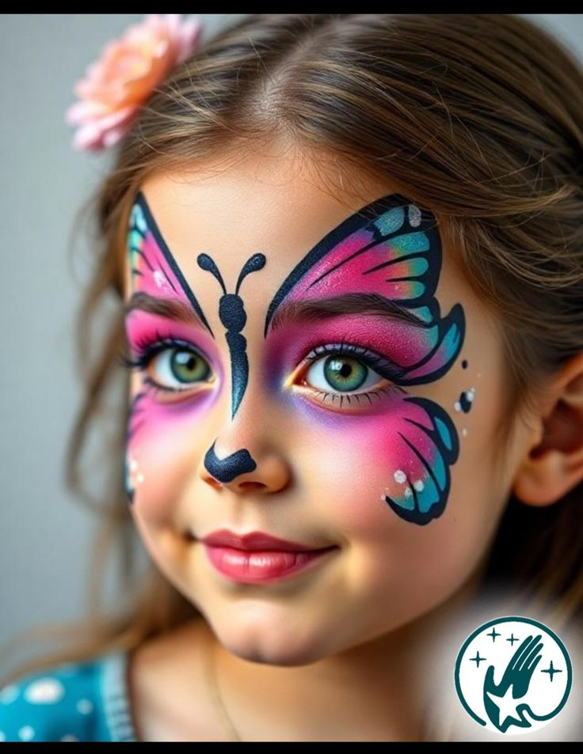

Face Painting Overview
Face painting is a creative activity enjoyed by people of all ages. It allows artists to use safe, skin-friendly paints to create fun designs.
Many face painters work at events such as birthday parties, fairs, and festivals to bring joy and creativity to celebrations.
Core Skills
My key skills include:
- Creativity
- Design
- Color theory
- Patience
- Communication
Event Experience
I have been painting faces for over 5 years, specializing in event decorations.
